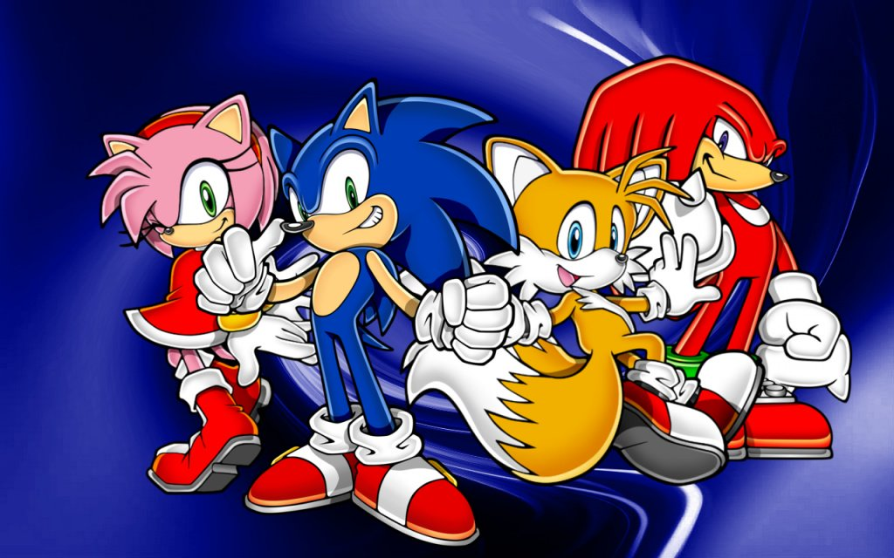

About Sonic
Sonic is the fastest thing alive! He works with his friends: Tails, Amy and Knuckles, to stop the evil doing of Dr. Eggman.
Sonic and his friends
Sonic's Characteristics
- He has red shoes
- He's fast
- He likes chilidogs
Sonic's Friends
Sonic has a lot of friends. His best friend being Tails. Click the links below to learn more about them: